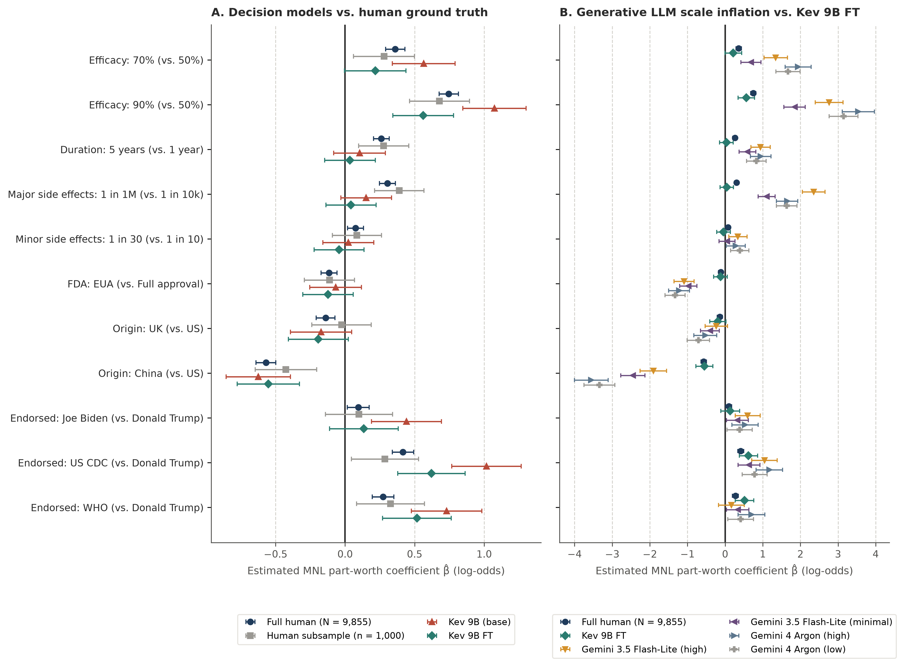
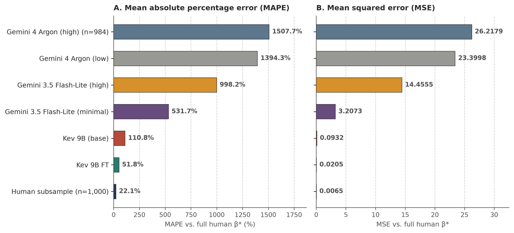
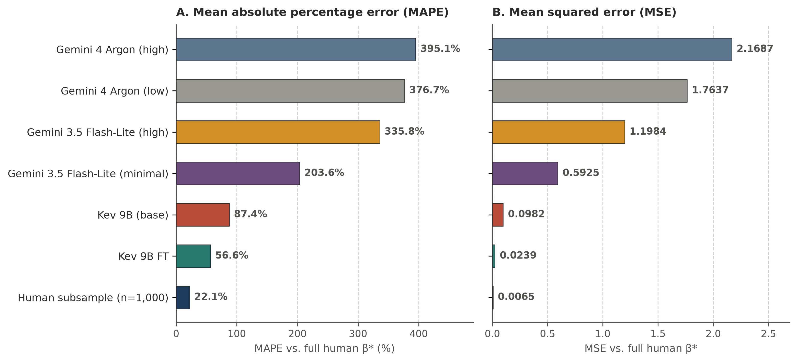

Distributional Silicon Sampling: Training Decision Models to Predict Human Response Distributions
Abstract
[TODO: Abstract]
Keywords. Decision models, Silicon sampling, Econometric inference, Conjoint analysis, Marketing research
Introduction
Simulating consumer choices, attitudes, and survey responses with foundation models, commonly referred to as silicon sampling, has attracted growing interest in marketing, public opinion, and behavioral research (Argyle et al. 2023, Brand et al. 2023, Horton et al. 2023, Goli and Singh 2024, Sarstedt et al. 2024, Leng et al. 2026, Wang et al. 2026). In marketing applications, the primary goal is often downstream econometric inference, such as estimating part-worth utilities in conjoint analysis or causal treatment effects in randomized experiments. Currently, researchers rely on generative large language models (LLMs) that produce text one token at a time. However, recent studies in marketing science establish that naively replacing human respondents with generative LLM outputs introduces severe bias in preference measurement and downstream regressions (Goli and Singh 2024, Leng et al. 2026, Wang et al. 2026). Because generative LLMs are post-trained for deterministic reasoning and safety compliance, scaling up model size, enabling chain-of-thought (CoT) reasoning, or fine-tuning autoregressive models on small task demonstrations makes their choices overly rational (Wang et al. 2026). This collapses human choice diversity, triggers safety refusals on sensitive options (e.g., opting out of vaccination in Wang et al. (2026)), and worsens regression parameter recovery. Furthermore, estimating choice shares from text generation requires costly Monte Carlo sampling (Wadi and Fredette 2025, Zahradnickova et al. 2026). Recognizing that silicon sampling must be treated as a calibration problem rather than a one-shot prompting exercise (Leng et al. 2026), pioneering studies develop post-hoc statistical methods that use human benchmark data to debias regression estimates (Wang et al. 2026) or optimally weight ensembles of prompts, personas, and model checkpoints (Leng et al. 2026). At the same time, both studies highlight critical open directions for future research, namely how to incorporate rich individual-level personas, improve the upstream alignment of the foundation model itself, and extend LLM-based inference to settings where target-domain human calibration data are scarce or unavailable (Leng et al. 2026, Wang et al. 2026).
Decision models, also known as System One architectures (Deußer et al. 2026, Geuter et al. 2026, Li and Wagle 2026, Palmer 2026), offer a direct alternative for silicon sampling. Instead of generating text tokens, a decision model takes a respondent persona and a structured question (e.g., a categorical choice task or an ordinal Likert scale) and outputs a normalized probability distribution over the supplied options in a single prefill forward pass. Because the model scores each option directly from its contextualized representation and restricts probability mass strictly to the valid options, it eliminates text-generation variance, Monte Carlo sampling overhead, and safety refusals. Moreover, its continuous choice probabilities can be directly plugged into maximum likelihood and ordinary least squares regressions.
Despite this architectural advantage, off-the-shelf decision models, similar to generative LLMs, suffer from a fundamental mismatch between their training objective and the goal of silicon sampling. Both model families are trained to maximize single-answer accuracy on objective benchmarks such as mathematics, code verification, and factual question answering (Gao et al. 2026, Geuter et al. 2026, Palmer 2026). Standard training pairs each prompt with a single class label and minimizes cross-entropy loss to push all probability mass onto that one winning option. In consumer and social surveys, however, respondents who share a demographic profile never agree unanimously, and instead spread their choices across options. A model trained to concentrate probability mass on a single answer treats genuine within-group behavioral variation as classification error, producing overconfident probabilities and biased downstream regression estimates.
To resolve this training mismatch, we fine-tune open-weight decision models (Palmer 2026), built on Qwen 3.5 backbones (Qwen Team 2026), directly on respondent-level survey microdata and test whether this training transfers zero-shot to downstream econometric inference. Our training corpus combines 10 waves of the US International Social Survey Programme (ISSP 2015 to 2024; 14,356 respondents and 616 questions) with the Twin-2K-500 US panel (Toubia et al. 2025; 2,058 respondents and 974 questions), totaling 1,881,950 individual respondent-question observations across 1,572 training questions and 17 harmonized demographic and attitudinal attributes. Using grouped shared-prefix training, we encode each respondent’s multi-attribute persona once and minimize cross-entropy loss across their packed individual responses. This trains the decision model to predict calibrated conditional choice distributions at unit temperature (\(T = 1\)), requiring no post-hoc temperature tuning and no target-domain human calibration data.
We evaluate off-the-shelf and fine-tuned decision models across held-out survey microdata and two out-of-domain marketing regression benchmarks. First, on 13,183 respondent-question records from 18 held-out ISSP and Twin-2K-500 validation questions, fine-tuning reduces respondent-level cross-entropy by \(27.5\%\) (from \(2.398\) to \(1.738\) bits for Kev 9B). Second, we follow the empirical benchmark and Multinomial Logit (MNL) evaluation protocol of Wang et al. (2026) on the Kreps et al. (2020) COVID-19 vaccine conjoint dataset (N = 1,971 respondents and 9,855 choice sets across \(d = 11\) attribute levels). We evaluate parameter recovery (MAPE and MSE against full-sample human \(\boldsymbol{\beta}^*\)) on a 1,000-choice-set subsample under both Wang et al. (2026)’s random-persona prompt and actual respondent personas. Consistent with Wang et al. (2026), generative LLMs (Gemini 3.5 Flash-Lite and Gemini 4 Argon) exhibit severe estimation error (\(\mathrm{MSE} = 0.59\) to \(26.22\), \(\mathrm{MAPE} = 203.6\%\) to \(1507.7\%\)) that worsens at higher thinking budgets and is compounded by safety refusals. Off-the-shelf Kev 9B (\(\mathrm{MSE} = 0.0932\) to \(0.0982\)) already outperforms the generative LLMs by an order of magnitude. Fine-tuned Kev 9B FT reduces MNL MSE by a further \(76\%\) to \(78\%\), reaching \(\mathrm{MSE} = 0.0205\) (\(\mathrm{MAPE} = 51.8\%\)) under random personas and \(\mathrm{MSE} = 0.0239\) (\(\mathrm{MAPE} = 56.6\%\)) under respondent personas, approaching the finite-sample error of the 200-respondent human subsample itself (\(\mathrm{MSE} = 0.0065\), \(\mathrm{MAPE} = 22.1\%\)). Third, we test zero-shot generalization to a randomized clinical trial of front-of-package nutrition labels (Grummon et al. 2025; N = 5,633 US grocery shoppers and 33,798 product healthfulness choices across 6 labeling arms). Fine-tuning substantially reduces respondent-level choice cross-entropy and accurately recovers the causal treatment-arm effects in participant-level OLS regressions, even when conditioning on consumer nutrition attributes never seen during training.
Methodology
Predicting Respondent-Level Choice Probabilities
Consider a survey or experimental dataset of human respondents indexed by \(i \in \{1, \dots, N\}\). Each respondent has a multi-attribute persona state \(\mathbf{s}_i\) (e.g., sex, age, education, income, political party, and race) and answers a set of questions \(\mathcal{Q}_i\). Each question \(q \in \mathcal{Q}_i\) presents \(K_q\) discrete answer options \(\mathcal{Y}_q = \{y_1, \dots, y_{K_q}\}\). For categorical choice items, the options are unordered alternatives that may include attribute descriptions. For ordinal score items, the options are ordered rating levels \(y_1 \prec y_2 \prec \dots \prec y_{K_q}\). Let \(\mathbf{y}_{i,q} = (y_{i,q,1}, \dots, y_{i,q,K_q}) \in \{0, 1\}^{K_q}\) denote respondent \(i\)’s observed one-hot choice vector on question \(q\), where \(y_{i,q,k} = 1\) if respondent \(i\) selected option \(y_k\) and \(0\) otherwise.
In a decision model (Palmer 2026), the persona state \(\mathbf{s}_i\), question text \(q\), and options \(\mathcal{Y}_q\) are formatted into a structured prompt and processed in one causal forward pass. Let \(\mathbf{h}_{i,q} \in \mathbb{R}^{d_{\mathrm{model}}}\) denote the final-layer hidden state at the closing token of question \(q\). Let \(\mathbf{h}_{i,q,k} \in \mathbb{R}^{d_{\mathrm{model}}}\) denote the final-layer hidden state at the closing token of option \(k\). Using learned linear projections \(\mathbf{W}_q, \mathbf{W}_k \in \mathbb{R}^{d_{\mathrm{head}} \times d_{\mathrm{model}}}\), the decision head computes a score \(z_{i,q,k}\) for each option \(k\): \[ z_{i,q,k} = \frac{(\mathbf{W}_q \mathbf{h}_{i,q})^\top (\mathbf{W}_k \mathbf{h}_{i,q,k})}{\sqrt{d_{\mathrm{head}}}}. \tag{1}\] Applying a softmax function over the \(K_q\) option scores yields the predicted choice distribution in a single pass: \[ P_{\mathrm{model}}(Y_{i,q} = y_k \mid \mathbf{s}_i) = \frac{\exp(z_{i,q,k} / T)}{\sum_{j=1}^{K_q} \exp(z_{i,q,j} / T)}, \tag{2}\] where \(T\) is the readout temperature (\(T = 1\) for all fine-tuned models, with no post-hoc temperature fitting).
Downstream Econometric Estimation from Model Predictions
To evaluate whether decision models can replace human respondents in applied marketing research, we feed the models’ predicted choice probabilities directly into the econometric regressions of two out-of-domain studies.
Multinomial Logit (MNL) in Conjoint Analysis
We follow the choice-based conjoint setup and evaluation protocol of Wang et al. (2026). Each respondent \(i\) evaluates \(t \in \{1, \dots, 5\}\) paired choice tasks. Each task presents two hypothetical product profiles (Option A and Option B) with binary attribute vectors \(\mathbf{x}_{i,t,A}, \mathbf{x}_{i,t,B} \in \{0, 1\}^d\), alongside an outside no-choice option (Option C) whose utility is normalized to zero. Under the standard MNL specification (Wang et al. 2026), the choice probabilities for part-worth parameter vector \(\boldsymbol{\beta} \in \mathbb{R}^d\) are: \[ P_A(\mathbf{x}_{i,t}; \boldsymbol{\beta}) = \frac{\exp(\mathbf{x}_{i,t,A}^\top \boldsymbol{\beta})}{1 + \exp(\mathbf{x}_{i,t,A}^\top \boldsymbol{\beta}) + \exp(\mathbf{x}_{i,t,B}^\top \boldsymbol{\beta})}, \qquad P_B(\mathbf{x}_{i,t}; \boldsymbol{\beta}) = \frac{\exp(\mathbf{x}_{i,t,B}^\top \boldsymbol{\beta})}{1 + \exp(\mathbf{x}_{i,t,A}^\top \boldsymbol{\beta}) + \exp(\mathbf{x}_{i,t,B}^\top \boldsymbol{\beta})}, \tag{4}\] and \(P_C(\mathbf{x}_{i,t}; \boldsymbol{\beta}) = 1 - P_A(\mathbf{x}_{i,t}; \boldsymbol{\beta}) - P_B(\mathbf{x}_{i,t}; \boldsymbol{\beta})\). Given observed or predicted choice shares \((p_{i,t,A}, p_{i,t,B}, p_{i,t,C})\) across \(n\) choice sets, we estimate \(\hat{\boldsymbol{\beta}}\) by minimizing the negative log-likelihood via Newton-CG: \[ \hat{\boldsymbol{\beta}} = \arg\min_{\boldsymbol{\beta} \in \mathbb{R}^d} -\frac{1}{n} \sum_{(i,t)} \Big[ p_{i,t,A} \log P_A(\mathbf{x}_{i,t}; \boldsymbol{\beta}) + p_{i,t,B} \log P_B(\mathbf{x}_{i,t}; \boldsymbol{\beta}) + p_{i,t,C} \log P_C(\mathbf{x}_{i,t}; \boldsymbol{\beta}) \Big]. \tag{5}\] For human respondents and generative LLMs, \((p_{i,t,A}, p_{i,t,B}, p_{i,t,C})\) is a one-hot choice vector. For decision models, we use the continuous choice probabilities output by Equation 2. Following Wang et al. (2026), let \(\boldsymbol{\beta}^*\) denote the ground-truth MNL parameter vector estimated on the full human dataset. We evaluate parameter recovery using Mean Absolute Percentage Error (\(\mathrm{MAPE}\)) and Mean Squared Error (\(\mathrm{MSE}\)) across the \(d\) attributes: \[ \mathrm{MAPE}(\hat{\boldsymbol{\beta}}, \boldsymbol{\beta}^*) = \frac{1}{d} \sum_{j=1}^{d} \frac{|\hat{\beta}_j - \beta^*_j|}{|\beta^*_j|} \times 100\%, \qquad \mathrm{MSE}(\hat{\boldsymbol{\beta}}, \boldsymbol{\beta}^*) = \frac{1}{d} \sum_{j=1}^{d} (\hat{\beta}_j - \beta^*_j)^2. \tag{6}\]
Participant-Level OLS in Randomized Clinical Trials
In our second econometric study, we evaluate causal treatment-effect recovery in the front-of-package nutrition labeling randomized clinical trial of Grummon et al. (2025). Each shopper \(i\) is randomized to one of six labeling arms \(a_i\) (the reference Positive arm or one of five treatment arms) and completes six 3-option product healthfulness choice tasks \(q \in \{1, \dots, 6\}\). In each task, option \(y_1\) is the objectively healthier food or beverage product. For each shopper \(i\), we compute the mean probability of selecting the healthier product across the six categories, \(\bar{p}_i = \frac{1}{6} \sum_{q=1}^6 P(Y_{i,q} = y_1 \mid \mathbf{s}_i, a_i)\). Following Grummon et al. (2025), we estimate the five treatment-arm effects \(\hat{\boldsymbol{\beta}} \in \mathbb{R}^5\) relative to the Positive reference arm via ordinary least squares (OLS) with HC1 heteroskedasticity-robust standard errors. We compare the model-estimated treatment effects \(\hat{\boldsymbol{\beta}}\) against the human RCT treatment effects \(\boldsymbol{\beta}^*\) using \(\mathrm{OLS\ MAPE}\), \(\mathrm{OLS\ MSE}\), \(\mathrm{OLS\ MAE}\), and Spearman rank correlation \(\rho\).
Experimental Setup
Harmonized Respondent-Level Training Corpus (US ISSP and Twin-2K-500)
Survey microdata sources. To train a general-purpose respondent-conditioned decision model without relying on target-domain marketing data, we construct a harmonized microdata corpus from two public US individual-level survey sources (Table 1). The first source comprises \(10\) consecutive US waves of the International Social Survey Programme (US ISSP, 2015 to 2024; Table W1), spanning diverse thematic modules on work orientations, the role of government, social networks, religion, social inequality, the environment, health and health care, family and gender roles, national identity, and digital societies. Across these \(10\) waves, we extract 767,484 individual responses from 14,356 unique US respondents across \(616\) survey questions (\(474\) ordinal Likert score items and \(142\) unordered categorical choice items, with a mean of \(53.5\) answered questions per respondent). The second source is the Twin-2K-500 digital twin benchmark (Toubia et al. 2025), from which we extract 1,127,649 individual responses across 2,058 US participants and \(974\) psychological, economic, and behavioral questions (\(287\) ordinal Likert score items and \(687\) categorical choice items, with a mean of \(547.9\) answered questions per respondent). Combined across both sources, the full survey corpus contains 1,895,133 respondent-question observations from 16,414 unique US respondents (16,338 distinct persona configurations) across 1,590 questions.
Question-level training and validation split. To evaluate respondent-level distributional calibration on unseen survey questions prior to out-of-domain econometric testing, we partition the survey corpus at the question level (Table 1). The training split contains 1,881,950 respondent-question observations across 1,572 questions (\(757\) Likert score items and \(815\) categorical choice items) from all 16,414 respondents (760,473 observations across \(612\) questions from US ISSP and 1,121,477 observations across \(960\) questions from Twin-2K-500). The held-out validation split comprises 13,183 respondent-question observations across \(18\) completely unseen questions from 3,885 respondents, consisting of \(4\) ordinal Likert score questions from the 2020 US ISSP wave (7,011 observations across 1,827 respondents) and \(14\) categorical choice questions from Twin-2K-500 (6,172 observations across 2,058 respondents). Because the split is performed strictly by question, none of the validation items or their question stems appear in the training set.
Harmonized persona attributes. Each respondent \(i\) in the training and validation corpus is represented by a structured persona vector \(\mathbf{s}_i\) drawn from \(17\) harmonized demographic and attitudinal attributes (Table W2). Of these \(17\) attributes, \(11\) are shared across both US ISSP and Twin-2K-500, namely sex, age, education, religion, attendance of religious services, political ideology, marital status, main activity, political party, household income, and US census region. Four additional attributes are recorded exclusively in US ISSP (voting participation in the last general election, urban-rural place of living, trade union membership, and ancestry), and two attributes are recorded exclusively in Twin-2K-500 (race and household size). Because the 16,414 respondents span 16,338 distinct persona configurations (nearly one respondent per cell), discrete subgroup reweighting (Leng et al. 2026) cannot be applied at the individual level; instead, conditioning a shared decision model on the factorized attribute text amortizes calibration across combinatorial profiles. When a given attribute is unrecorded or missing for respondent \(i\), that attribute line is omitted from the conditioning prompt so that the decision model learns to marginalize consistently over partially observed respondent profiles.
| Split | Dataset | Attributes | Questions | Likert (score) |
Categorical (choice) |
Respondents | Observations |
|---|---|---|---|---|---|---|---|
| Training | US ISSP (2015 to 2024) | 15 | 612 | 470 | 142 | 14,356 | 760,473 |
| Training | Twin-2K-500 | 13 | 960 | 287 | 673 | 2,058 | 1,121,477 |
| Training | Combined | 17 | 1,572 | 757 | 815 | 16,414 | 1,881,950 |
| Validation | US ISSP (2015 to 2024) | 15 | 4 | 4 | 0 | 1,827 | 7,011 |
| Validation | Twin-2K-500 | 13 | 14 | 0 | 14 | 2,058 | 6,172 |
| Validation | Combined | 17 | 18 | 4 | 14 | 3,885 | 13,183 |
| Out-of-domain test | COVID-19 vaccine conjoint (full / eval subsample) | 8 | 5 / 5 | 0 | 5 / 5 | 1,971 / 200 | 9,855 / 1,000 |
| Out-of-domain test | Nutrition labeling RCT (6 arms x 6 categories) | 10 | 36 | 0 | 36 | 5,633 | 33,798 |
Out-of-Domain Marketing Evaluation Benchmarks
Choice-based conjoint analysis of COVID-19 vaccine preferences. Our first out-of-domain marketing evaluation tests structural part-worth utility recovery on the choice-based conjoint dataset of Kreps et al. (2020), following the benchmark setup of Wang et al. (2026) (Table 1). In this study, 1,971 US respondents each evaluate \(5\) discrete choice sets (9,855 total choice observations). In each choice set, the respondent chooses between two hypothetical COVID-19 vaccine profiles (Vaccine A and Vaccine B) or selects the no-vaccine opt-out alternative (Neither). Each vaccine profile is randomized across \(7\) attributes represented by \(d = 11\) non-reference binary indicator levels: efficacy (\(70\%\) and \(90\%\) relative to a \(50\%\) baseline), protection duration (\(5\) years relative to \(1\) year), incidence of major side effects (\(1\) in 1,000,000 relative to \(1\) in 10,000), incidence of minor side effects (\(1\) in \(30\) relative to \(1\) in \(10\)), regulatory authorization (emergency use authorization relative to full FDA approval), country of origin (China and the United Kingdom relative to the United States), and institutional endorsement (Vice President Biden, the US Centers for Disease Control and Prevention, and the World Health Organization relative to President Trump). Following Wang et al. (2026), the multinomial logit (MNL) parameter vector \(\boldsymbol{\beta}^* \in \mathbb{R}^{11}\) estimated on the full 9,855-observation human dataset serves as the ground-truth benchmark, and model predictions are evaluated on the held-out subsample of \(200\) respondents (n = 1,000 choice sets). We evaluate each model under both the unconditioned random-persona prompt of Wang et al. (2026) and respondent-level persona conditioning using the \(8\) demographic and political attributes recorded per participant (sex, age, education, race, household income, religion, political party, and political ideology), all \(8\) of which are included among the \(17\) training attributes (Table W2). This comparison directly tests the future research direction proposed by Wang et al. (2026) on incorporating participant-specific personas into conjoint queries, while retaining all respondents who selected the no-vaccine opt-out (Neither), whom Wang et al. (2026) had to exclude due to commercial generative LLM safety refusals.
Randomized clinical trial of front-of-package nutrition labeling. Our second out-of-domain evaluation tests causal treatment-effect recovery on the front-of-package nutrition labeling randomized clinical trial of Grummon et al. (2025) (Table 1). In this experiment, N = 5,633 US grocery shoppers are randomly assigned to one of \(6\) between-subjects labeling arms (Positive, Control, Spectrum, Nutrient warning, High-in GI, and Traffic light) and complete \(6\) three-option product healthfulness choice tasks across distinct food and beverage categories, yielding \(36\) arm-by-category question cells and 33,798 individual product choices. Each shopper profile includes \(10\) demographic and behavioral attributes (Table W2). Notably, whereas \(5\) of these shopper attributes overlap with the survey training corpus (sex, age, education, household income, and race), the remaining \(5\) attributes are completely unseen during training (Hispanic or Latino ethnicity, SNAP or Food Stamps participation, Nutrition Facts label usage frequency, share of groceries purchased online, and objective nutrition literacy score). This partial covariate overlap allows us to test whether respondent-level fine-tuning generalizes not only to unseen choice tasks and experimental arms, but also to respondent profiles containing novel domain-specific behavioral covariates.
Models and Training Configuration
Off-the-shelf and respondent-fine-tuned decision models. We evaluate the Kev family of pretrained decision models (Gao et al. 2026, Palmer 2026) across three parameter scales (Kev 0.8B, Kev 4B, and Kev 9B), comparing each off-the-shelf base checkpoint against its respondent-level fine-tuned counterpart (Kev 0.8B FT, Kev 4B FT, and Kev 9B FT). Each base model is adapted on the 1,881,950 training observations in bfloat16 precision using Low-Rank Adaptation (LoRA, rank \(r = 64\), \(\alpha = 128\)) applied to all attention and feed-forward linear projections and the output scoring head. To amortize encoding of the respondent persona prefix across multiple answered items, we pack all training questions for a given respondent into shared-prefix token groups and optimize respondent-level cross-entropy (Equation 3) using AdamW with a peak learning rate of \(5 \times 10^{-5}\), weight decay of \(0.01\), a linear warmup of 2,000 steps followed by a cosine decay schedule, gradient clipping at \(1.0\), and gradient accumulation over \(12\) packed respondent groups per step. Models are evaluated every \(100\) optimizer steps on the 13,183 held-out validation observations across the \(18\) unseen US ISSP and Twin-2K-500 survey questions, and the checkpoint achieving the lowest validation cross-entropy is selected for out-of-domain evaluation. At inference time, both off-the-shelf and fine-tuned decision models produce complete option probability distributions in a single forward pass without any target-domain demonstrations, using each off-the-shelf checkpoint’s released calibration temperature (\(T = 2.19\) for Kev 9B (base)) and unit temperature (\(T = 1.00\)) with no post-hoc temperature tuning for all fine-tuned models.
Generative LLM and human subsample baselines. On the COVID-19 vaccine conjoint benchmark (Kreps et al. 2020, Wang et al. 2026), we additionally compare the decision models against two benchmarks. First, we report the human subsample baseline, which estimates the MNL model directly on the empirical choices of the \(200\) held-out human respondents (n = 1,000 choice sets) relative to the full-sample parameter vector \(\boldsymbol{\beta}^*\) (1,971 respondents, 9,855 choice sets). Second, we evaluate frontier and high-efficiency autoregressive generative LLMs (Gemini 4 Argon at low and high thinking budgets, and Gemini 3.5 Flash-Lite at minimal and high thinking budgets) under both the unconditioned random-persona prompt and the \(8\)-attribute respondent personas.
Results
Validation on Held-Out Survey Microdata
Distributional calibration on unseen survey questions. Before examining out-of-domain econometric estimation, we evaluate whether respondent-level fine-tuning improves conditional response distribution recovery on the 13,183 held-out survey validation observations across \(18\) unseen US ISSP and Twin-2K-500 questions (Table 2 and Figure 1). Prior to fine-tuning, the off-the-shelf decision models exhibit high respondent-level cross-entropy on the held-out survey questions (2.4262 nats for Kev 0.8B, 2.3586 nats for Kev 4B, and 2.3983 nats for Kev 9B), with negligible advantage from increasing model scale alone. Fine-tuning on the 1,881,950 survey training records reduces held-out validation cross-entropy by \(26.0\%\) to \(27.5\%\) across all three model scales, reaching minima of 1.7963 nats on Kev 0.8B (at \(0.34\) epochs), 1.7431 nats on Kev 4B (at \(0.67\) epochs), and 1.7377 nats on Kev 9B (at \(0.60\) epochs). As shown in Panel A of Figure 1, the largest reduction in cross-entropy occurs during the initial \(0.10\) epochs of training as the decision head adapts from generic pretraining to human survey response scales, followed by steady refinement through mid-epoch as the model learns demographic and attitudinal conditioning across respondent personas.
Zero-shot out-of-domain transfer during training. To verify that minimizing cross-entropy on general social and behavioral surveys translates into genuine out-of-domain calibration rather than memorization of survey-specific phrasing, we simultaneously track zero-shot choice cross-entropy on all 33,798 product healthfulness choices (N = 5,633 shoppers across \(36\) arm-by-category tasks) in the front-of-package nutrition labeling randomized clinical trial of Grummon et al. (2025) (Table 2 and Panel B of Figure 1). Even though no food, beverage, or nutrition labeling items appear anywhere in the training corpus, zero-shot out-of-domain cross-entropy on the nutrition trial declines monotonically alongside held-out survey validation loss during Epoch 1, dropping by \(17.5\%\) on Kev 0.8B (2.0224 to 1.6686 nats), \(31.5\%\) on Kev 4B (2.1745 to 1.4899 nats), and \(25.9\%\) on Kev 9B (1.8494 to 1.3710 nats). Furthermore, whereas the off-the-shelf models show weak and non-monotonic scaling on the held-out survey validation set, respondent-level fine-tuning unlocks a clear scaling hierarchy on out-of-domain marketing transfer, with Kev 9B FT achieving substantially lower out-of-domain choice cross-entropy (1.3710 nats) than both Kev 4B FT (1.4899 nats) and Kev 0.8B FT (1.6686 nats).
| Model | Base valid CE | FT valid CE (best) | FT valid CE (end Ep. 1) | Valid CE change | Best ckpt (epoch) | Out-of-domain RCT Base CE | Out-of-domain RCT FT CE | RCT CE change |
|---|---|---|---|---|---|---|---|---|
| Kev 0.8B | 2.4262 | 1.7963 | 1.8141 | -26.0% | 0.34 | 2.0224 | 1.6686 | -17.5% |
| Kev 4B | 2.3586 | 1.7431 | 1.7604 | -26.1% | 0.67 | 2.1745 | 1.4899 | -31.5% |
| Kev 9B | 2.3983 | 1.7377 | 1.7589 | -27.5% | 0.60 | 1.8494 | 1.3710 | -25.9% |

Kev 0.8B, Kev 4B, and Kev 9B) on the held-out survey validation split (Panel A; 18 unseen questions, n = 13,183) and zero-shot transfer to the front-of-package nutrition labeling randomized clinical trial (Panel B; 36 tasks, n = 33,798). Circles in Panel A indicate the selected best validation checkpoint for each model.
Multinomial Logit Estimation in Conjoint Analysis
Part-worth recovery across model families, reasoning budgets, and personas. Table 3 reports Multinomial Logit (MNL) part-worth parameter recovery on the \(200\)-respondent COVID-19 vaccine conjoint subsample (n = 1,000 choice sets across \(d = 11\) attribute indicators; see Figure W1 and Figure W2 for visual error comparisons), benchmarked against the full-sample human ground-truth vector \(\boldsymbol{\beta}^*\) (N = 1,971 respondents, 9,855 choice sets). Estimating the MNL model directly on the empirical choices of the \(200\) sampled human respondents establishes the finite-sample benchmark of \(\mathrm{MAPE} = 22.1\%\) and \(\mathrm{MSE} = 0.0065\). Consistent with Wang et al. (2026), autoregressive generative LLMs exhibit severe parameter bias under the unconditioned random-persona prompt (\(\mathrm{MAPE} = 531.7\%\) to \(1507.7\%\); \(\mathrm{MSE} = 3.2073\) to \(26.2179\)). Directly testing the future-work hypothesis of Wang et al. (2026), conditioning generative LLMs on the \(8\) individual demographic and political respondent attributes reduces MSE by \(81.5\%\) to \(92.5\%\) (\(\mathrm{MSE} = 0.5925\) to \(2.1687\)), confirming that respondent heterogeneity mitigates part of the aggregation distortion. Even with granular respondent personas, however, generative LLMs still exceed the MSE of the human subsample by \(91\) to \(334\) times (\(\mathrm{MAPE} = 203.6\%\) to \(395.1\%\)). Furthermore, increasing reasoning effort or model capability worsens econometric recovery across both prompting regimes: raising the thinking budget on Gemini 3.5 Flash-Lite from minimal to high increases MSE \(4.5\)-fold under random personas (\(3.2073\) to \(14.4555\)) and \(2.0\)-fold under respondent personas (\(0.5925\) to \(1.1984\)), while scaling to frontier Gemini 4 Argon increases MSE further to \(23.3998\) (low) and \(26.2179\) (high) under random personas and \(1.7637\) (low) and \(2.1687\) (high) under respondent personas.
Why generative LLMs fail and why continuous decision readouts succeed. Inspection of the choice distributions and attribute-level estimates (Figure 2, Panel B, and Table W3) isolates two mechanisms behind generative LLM distortion. First, whereas human respondents choose the no-vaccine outside option (Option C) in \(21.0\%\) of full-sample tasks (\(20.3\%\) in the subsample), unconditioned generative LLMs almost never opt out of vaccination: Option C share drops to \(3.0\%\) for Gemini 3.5 Flash-Lite (minimal), \(0.3\%\) for Gemini 4 Argon (low), and \(0.0\%\) at high thinking for both models (and under respondent personas, raising Gemini 3.5 Flash-Lite thinking from minimal to high compresses Option C share from \(21.9\%\) to \(4.8\%\)). Combined with deterministic utility maximization across paired profiles, this outside-option collapse inflates MNL log-odds coefficients by an order of magnitude (e.g., under respondent personas, Efficacy: 90% reaches \(+1.846\) to \(+3.538\) versus human \(+0.746\), and Origin: China reaches \(-1.908\) to \(-3.556\) versus \(-0.570\)). At high thinking under random personas, Gemini 4 Argon additionally refuses to select an option on \(16\) of \(1,000\) tasks (n = 984), citing neutrality policies on politically endorsed vaccine trade-offs. Second, replacing discrete token generation with single-pass continuous probabilities from off-the-shelf Kev 9B (base) (evaluated at its pretrained calibration temperature \(T = 2.19\)) eliminates refusals across all \(1,000\) tasks and lowers MNL MSE by an order of magnitude to \(0.0932\) (\(\mathrm{MAPE} = 110.8\%\)) under random personas and \(0.0982\) (\(\mathrm{MAPE} = 87.4\%\)) under respondent personas. Notably, discretizing Kev 9B (base) predictions into one-hot argmax choices degrades its respondent-persona MSE nearly eightfold (\(0.0982\) to \(0.7761\)), demonstrating that plugging continuous within-respondent probabilities directly into the MNL log-likelihood (Equation 5) is essential for preserving choice uncertainty.
Zero-shot gains and attribute-level alignment from respondent fine-tuning. Fine-tuning on general social and behavioral survey microdata (US ISSP and Twin-2K-500), without exposing the model to any vaccine or conjoint examples and evaluating at unit temperature (\(T = 1.00\)), substantially improves zero-shot conjoint estimation (Table 3). Relative to off-the-shelf Kev 9B (base), Kev 9B FT reduces MNL MSE by \(78.0\%\) under random personas (\(0.0932\) to \(0.0205\); \(\mathrm{MAPE} = 51.8\%\)) and by \(75.7\%\) under respondent personas (\(0.0982\) to \(0.0239\); \(\mathrm{MAPE} = 56.6\%\)), while reducing respondent-level choice cross-entropy from \(1.1388\) to \(1.0390\) nats (\(-8.8\%\)) and \(1.1505\) to \(1.0426\) nats (\(-9.4\%\)) and maintaining realistic aggregate Option C probability mass (\(24.8\%\) and \(32.2\%\)). As shown in Panel A of Figure 2 (Table W3), off-the-shelf Kev 9B (base) still overstates high-salience attributes (Efficacy: 90% \(= +1.399\) vs. \(+0.746\); Origin: China \(= -0.808\) vs. \(-0.570\); Endorsed: US CDC \(= +0.722\) vs. \(+0.416\)), reverses the sign on FDA: Emergency Use Authorization (\(+0.024\) vs. \(-0.115\)), and places only \(4\) of \(11\) point estimates within the \(95\%\) confidence intervals of the \(200\)-respondent human subsample. By contrast, Kev 9B FT places \(9\) of \(11\) point estimates inside the human subsample’s \(95\%\) confidence intervals, closely matching human part-worths on efficacy (\(+0.296\) and \(+0.627\) vs. \(+0.361\) and \(+0.746\)), Emergency Use Authorization (\(-0.195\) vs. \(-0.115\)), country of origin (\(-0.180\) and \(-0.439\) vs. \(-0.140\) and \(-0.570\)), and institutional endorsements (US CDC \(+0.415\) vs. \(+0.416\); WHO \(+0.249\) vs. \(+0.273\); Biden \(+0.036\) vs. \(+0.095\)). The remaining error is concentrated in conservative attenuation toward zero on two clinical risk-horizon attributes (Duration: 5 years \(= -0.037\) vs. \(+0.261\) and Major side effects: 1 in 1,000,000 \(= -0.027\) vs. \(+0.304\)), indicating that general survey training calibrates overall preference scale, origin, and institutional trust without inducing the extreme coefficient inflation of generative LLMs.
| Estimator | Random persona MAPE (%) | Random persona MSE | Respondent persona MAPE (%) | Respondent persona MSE |
|---|---|---|---|---|
| Human subsample (n = 1,000) | — | — | 22.1% | 0.0065 |
| Kev 9B FT | 51.8% | 0.0205 | 56.6% | 0.0239 |
| Kev 9B (base) | 110.8% | 0.0932 | 87.4% | 0.0982 |
| Gemini 3.5 Flash-Lite (minimal) | 531.7% | 3.2073 | 203.6% | 0.5925 |
| Gemini 3.5 Flash-Lite (high) | 998.2% | 14.4555 | 335.8% | 1.1984 |
| Gemini 4 Argon (low) | 1394.3% | 23.3998 | 376.7% | 1.7637 |
| Gemini 4 Argon (high) (random n = 984) | 1507.7% | 26.2179 | 395.1% | 2.1687 |

Kev 9B (base) and Kev 9B FT) against full-sample (N = 9,855) and subsample (n = 1,000) human estimates (Panel A) and illustrating scale inflation in generative LLMs across reasoning budgets (Panel B).
Causal Treatment-Effect Recovery in the Nutrition Labeling Randomized Trial
(TODO: Results, tables, and figures for respondent-level choice cross-entropy, participant-level OLS treatment-effect recovery, and generalization across seen versus unseen shopper attributes on the Grummon et al. 2025 front-of-package nutrition labeling randomized clinical trial.)
Discussion and Conclusion
[TODO: Discussion of implications for silicon sampling and econometric inference in marketing research, limitations, and conclusion.]
Declarations
Funding and Competing Interests
All authors certify that they have no affiliations with or involvement in any organization or entity with any financial interest or non-financial interest in the subject matter or materials discussed in this manuscript. The authors have no funding to report.
References
Web Appendix
| Wave | Thematic module | Questions | Likert (score) |
Categorical (choice) |
Respondents | Mean Qs / respondent | Responses |
|---|---|---|---|---|---|---|---|
| 2015 | Work orientations IV | 82 | 68 | 14 | 1,474 | 49.1 | 72,416 |
| 2016 | Role of government V | 60 | 52 | 8 | 1,384 | 58.6 | 81,043 |
| 2017 | Social networks and social resources | 60 | 32 | 28 | 1,173 | 59.2 | 69,500 |
| 2018 | Religion IV | 62 | 50 | 12 | 1,175 | 60.2 | 70,719 |
| 2019 | Social inequality V | 49 | 44 | 5 | 1,852 | 45.9 | 84,963 |
| 2020 | Environment IV | 55 | 45 | 10 | 1,847 | 52.3 | 96,598 |
| 2021 | Health and health care II | 58 | 50 | 8 | 1,146 | 54.8 | 62,793 |
| 2022 | Family and changing gender roles V | 55 | 32 | 23 | 1,126 | 45.6 | 51,303 |
| 2023 | National identity and citizenship | 60 | 56 | 4 | 1,589 | 56.3 | 89,391 |
| 2024 | Digital societies | 75 | 45 | 30 | 1,590 | 55.8 | 88,758 |
| Total | All 10 US waves (2015 to 2024) | 616 | 474 | 142 | 14,356 | 53.5 | 767,484 |
| Prompt attribute | Harmonized levels | Datasets |
|---|---|---|
| Sex | 2 (Male, Female) | ISSP, Twin-2K, Conjoint, Nutrition RCT |
| Age | 4 (18-29, 30-49, 50-64, 65+) | ISSP, Twin-2K, Conjoint, Nutrition RCT |
| Education | 4 (Less than high school, High school or some college, Associate’s degree, College graduate/some postgrad) | ISSP, Twin-2K, Conjoint, Nutrition RCT |
| Religion | 12 (Protestant, Catholic, Orthodox, …, Other) | ISSP, Twin-2K, Conjoint |
| Attendance of religious services | 6 (More than once a week, Once a week, Once or twice a month, A few times a year, Seldom, Never) | ISSP, Twin-2K |
| Political ideology | 8 (Very liberal, Liberal, Somewhat liberal, …, Other) | ISSP, Twin-2K, Conjoint |
| Voted in the last general election | 2 (Yes, No) | ISSP |
| Place of living | 5 (A big city, The suburbs or outskirts of a big city, A town or a small city, A country village, A farm or home in the country) | ISSP |
| Marital status | 6 (Married, Living with a partner, Divorced, Separated, Widowed, Never been married) | ISSP, Twin-2K |
| Main activity | 10 (Full-time employment, Part-time employment, Self-employed, …, Other) | ISSP, Twin-2K |
| Trade union membership | 2 (Yes, No) | ISSP |
| Political party | 5 (Democrat, Republican, Independent, Something else, Other candidate) | ISSP, Twin-2K, Conjoint |
| Income | 15 (Less than $30,000, $30,000 - $50,000, $50,000 - $75,000, …, $35,000 - $49,999) | ISSP, Twin-2K, Conjoint, Nutrition RCT |
| Region | 4 (Northeast, Midwest, South, West) | ISSP, Twin-2K |
| Ancestry | 96 (Algeria, American Indian, American only, …, Yugoslavia) | ISSP |
| Race | 5 (White, Black, Asian, Hispanic, Other) | Twin-2K, Conjoint, Nutrition RCT |
| How many people, including yourself, live in your household? | 5 (1, 2, 3, 4, More than 4) | Twin-2K |
| Hispanic or Latino | 2 (No, Yes) | Nutrition RCT |
| SNAP / Food Stamps recipient | 3 (Don’t know, No, Yes) | Nutrition RCT |
| Nutrition Facts label usage | 5 (Always, Most of the time, Never, Rarely, Sometimes) | Nutrition RCT |
| Share of groceries bought online | 4 (25-49%, 50-74%, 75% or more, Less than 25%) | Nutrition RCT |
| Nutrition literacy score | 5 (0 out of 4, 1 out of 4, 2 out of 4, 3 out of 4, 4 out of 4) | Nutrition RCT |
| Vaccine attribute level | Full human (N = 9,855) | Human subsample (n = 1,000) | Kev 9B FT | Kev 9B (base) | Gemini 3.5 Flash-Lite (high) | Gemini 3.5 Flash-Lite (minimal) | Gemini 4 Argon (high) | Gemini 4 Argon (low) |
|---|---|---|---|---|---|---|---|---|
| Efficacy: 70% (vs. 50%) | +0.361 (0.035) | +0.280 (0.112) | +0.296 (0.113) | +0.634 (0.119) | +1.344 (0.158) | +0.688 (0.135) | +1.940 (0.176) | +1.671 (0.163) |
| Efficacy: 90% (vs. 50%) | +0.746 (0.035) | +0.679 (0.110) | +0.627 (0.112) | +1.399 (0.120) | +2.764 (0.188) | +1.846 (0.145) | +3.538 (0.218) | +3.148 (0.196) |
| Duration: 5 years (vs. 1 year) | +0.261 (0.029) | +0.277 (0.092) | -0.037 (0.093) | -0.298 (0.098) | +0.940 (0.131) | +0.592 (0.114) | +0.948 (0.140) | +0.830 (0.133) |
| Major side effects: 1 in 1,000,000 (vs. 1 in 10,000) | +0.304 (0.029) | +0.389 (0.091) | -0.027 (0.092) | +0.068 (0.095) | +2.353 (0.154) | +1.103 (0.114) | +1.647 (0.146) | +1.634 (0.140) |
| Minor side effects: 1 in 30 (vs. 1 in 10) | +0.076 (0.029) | +0.085 (0.090) | -0.056 (0.092) | -0.018 (0.095) | +0.341 (0.124) | +0.051 (0.109) | +0.282 (0.128) | +0.389 (0.124) |
| FDA: Emergency Use Authorization (vs. Full approval) | -0.115 (0.029) | -0.113 (0.092) | -0.195 (0.093) | +0.024 (0.096) | -1.089 (0.136) | -0.978 (0.115) | -1.223 (0.141) | -1.329 (0.137) |
| Origin: United Kingdom (vs. United States) | -0.140 (0.035) | -0.026 (0.109) | -0.180 (0.110) | -0.303 (0.114) | -0.234 (0.151) | -0.402 (0.127) | -0.527 (0.157) | -0.710 (0.151) |
| Origin: China (vs. United States) | -0.570 (0.036) | -0.425 (0.113) | -0.439 (0.113) | -0.808 (0.121) | -1.908 (0.179) | -2.449 (0.164) | -3.556 (0.227) | -3.341 (0.210) |
| Endorsed: Joe Biden (vs. Donald Trump) | +0.095 (0.040) | +0.100 (0.123) | +0.036 (0.126) | +0.090 (0.130) | +0.600 (0.171) | +0.325 (0.148) | +0.531 (0.178) | +0.385 (0.170) |
| Endorsed: US CDC (vs. Donald Trump) | +0.416 (0.039) | +0.287 (0.123) | +0.415 (0.124) | +0.722 (0.128) | +1.045 (0.172) | +0.635 (0.148) | +1.175 (0.179) | +0.784 (0.169) |
| Endorsed: WHO (vs. Donald Trump) | +0.273 (0.040) | +0.327 (0.124) | +0.249 (0.126) | +0.205 (0.131) | +0.166 (0.173) | +0.334 (0.152) | +0.699 (0.181) | +0.411 (0.173) |

Gemini 4 Argon (high) after 16 neutrality refusals) relative to full-sample human \(\boldsymbol{\beta}^*\) (N = 9,855).
